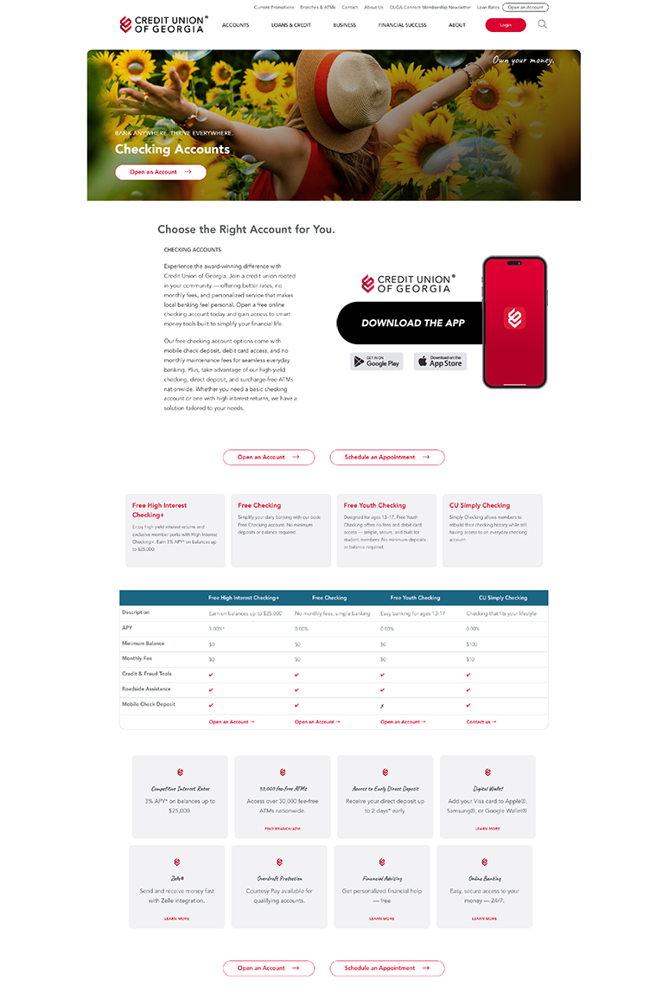
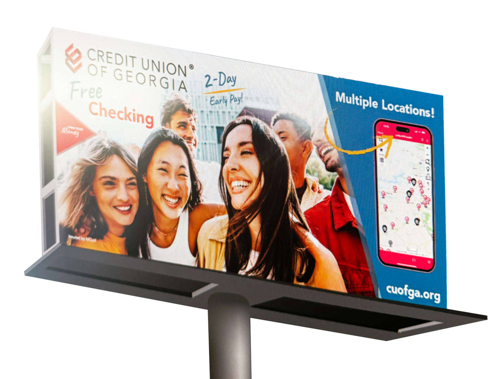

credit union of georgia
Checking page redesign — clarity & conversion
Cleaner IA, faster compare, and SEO hygiene that actually moved the needle.

uxiaseoanalytics
UX systems, web growth, and marketing.
credit union of georgia
Cleaner IA, faster compare, and SEO hygiene that actually moved the needle.

campaign creative
Concept, art direction, SEM, and billboard cohesion with the redesigned hub.
